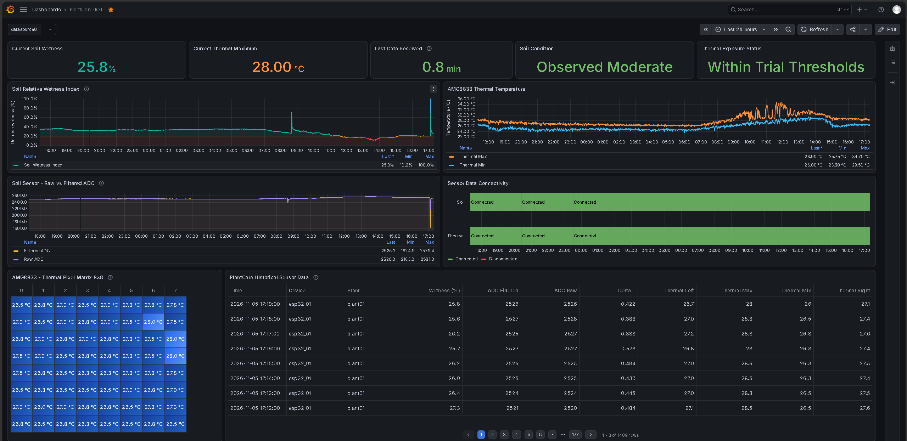
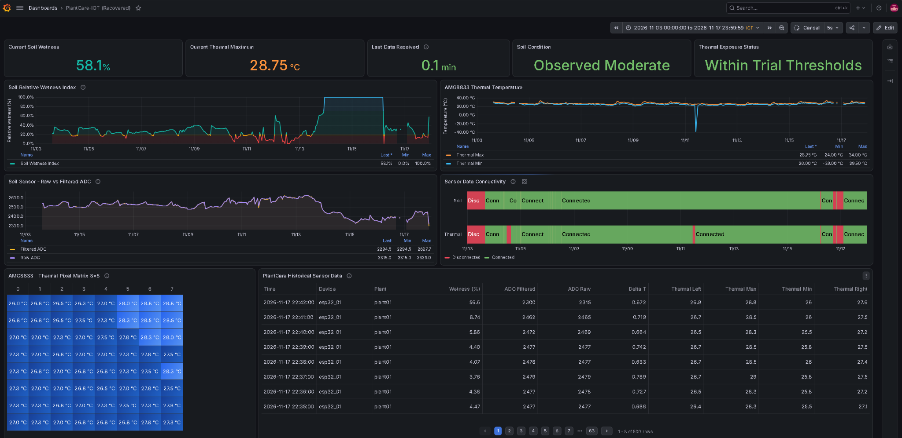

PlantCare IoT
Soil wetness and thermal exposure monitoring for a potted plant. This offline page preserves existing project screenshots for review when Grafana, InfluxDB, or the network is unavailable.
The displayed values and freshness labels belong to the original captures. They do not describe the plant's current condition. These images are evidence, not a database backup or an interactive Grafana dashboard.
Dashboard overview
The report identifies this as the 24-hour view on 5 November 2026. The saved dashboard includes the soil index, thermal maximum, reading age, experimental status labels, ADC trends, availability, an 8 × 8 thermal matrix, and historical rows.

Local Grafana dashboard: supporting evidence
Shortly before submission, the team experienced a problem with the shared Grafana environment. We prepared a local Grafana view as supporting evidence that PlantCare telemetry had been collected and stored in InfluxDB, and that the historical records could still be queried.

Our historical records extend back to 29 October, as documented in the final report's earlier CSV audit. Together with the records shown here through 17 November, this supports a collection period of more than two weeks, with interruptions. The screenshot itself displays 3-17 November; it does not show 29 October or establish uninterrupted collection.
In the early period, we observed connection interruptions, which correspond to disconnected segments in the telemetry-freshness panel. Later, the readings were recorded more consistently, although some gaps remain visible. This panel summarizes the arrival of sensor data; it does not directly measure Wi-Fi connection state.
The team observed a pattern consistent with the plant setup: wetness tended to decrease as the soil dried during the day and increase after watering. These trends support the expected sensor response, but the index is specific to this setup and does not independently establish the plant's health.
From around 10 November, we encountered calibration issues and recalibrated the soil sensor several times to find a range that produced more reasonable readings. Some later fluctuations and saturated wetness values therefore reflect calibration adjustments as well as changes in soil conditions. They should not all be interpreted as changes in the plant itself. Isolated sensor anomalies also require separate investigation.
Despite the shared Grafana problem near submission, the available stored history supports that PlantCare was functioning and collecting telemetry over time. The local view provides supporting evidence of that workflow, with the data gaps and calibration limitations made explicit.
The shared-environment issue, connection observations, and recalibration timeline are the team's account. The 29 October start is supported by the final report's separate audit. The underlying full historical dataset was not independently re-audited for this offline page.